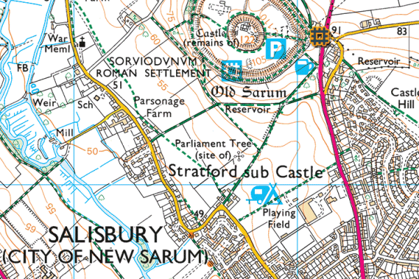

Hampshire Cross-Country League
Hudson's Field, Salisbury

View Ordnance Survey map (using Streetmap)
Get directions (using Google Maps)
View Bird's Eye (using Bing Maps)
Course
- Hudson's Field is the area with the circular cricket pitch in the middle just to the south of Old Sarum and west of Castle Road.
- The course incorporates laps of Hudson's Field along with various loops of the fields that lie between Hudson's Field and Old Sarum.
- The course map indicates the general layout. There is an additional small lap at the base of the field, and final details depend on other users of the field. Courses will be shown for each race at the venue.
Download course map (Word doc)
Download course map (PDF)
Parking
- The only on-site parking is in the main car park in Hudson's Field, accessed from Castle Road, the first parking area being a public car park.
- Alternative parking space is available in Stratford Road on the west side of Hudson's Field.
- If approaching Salisbury from the north, it might be more convenient to use the Beehive Park & Ride north of Old Sarum Castle and get off the bus by the field.
General information (last updated 6 February 2014)
- The pavilion has been booked for changing and toilets, and additional portable toilets will be installed alongside. There are no football matches on the day, which should also ease parking.
Sat Nav destination
Postcode: SP1 3SA
OS Grid Reference: SU142321